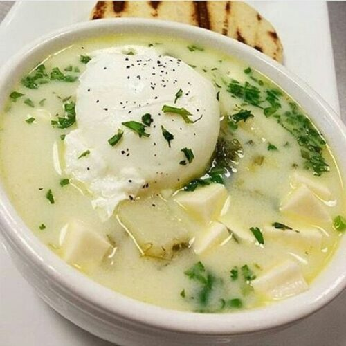

La pisca andina es una sopa o caldo de preparación sencilla, hecho a base de cilantro, cebollín y agua, papas cortadas en trozos, huevo y leche. La pisca andina es representativa y nativa de los Andes
venezolanos y es comúnmente consumida durante el desayuno. Es típicamente acompañada con arepas de maíz.
La papa, producto por excelencia de la región andina, es ingrediente distintivo de la preparación.

Ingredientes:
4 papas
4 tazas de caldo de pollo
1/2 lt. de leche
2 cdas. de aceite
2 huevos
2 ramas de cebollín (cebollas de verdeo)
1 ramita de cilantro
Sal
Preparación:
Hervir el caldo y agregar las papas, el aceite y la cebolla de verdeo sin picar.
Cuando estén blandas las papas, añadir los huevos cuidando que no se rompa la yema, cocinamos 5 minutos más o hasta que los huevos estén cocidos.
Añadimos la leche y el cilantro picadito, y esperamos que hierva, cocinamos por 3 minutos más y retiramos del fuego.